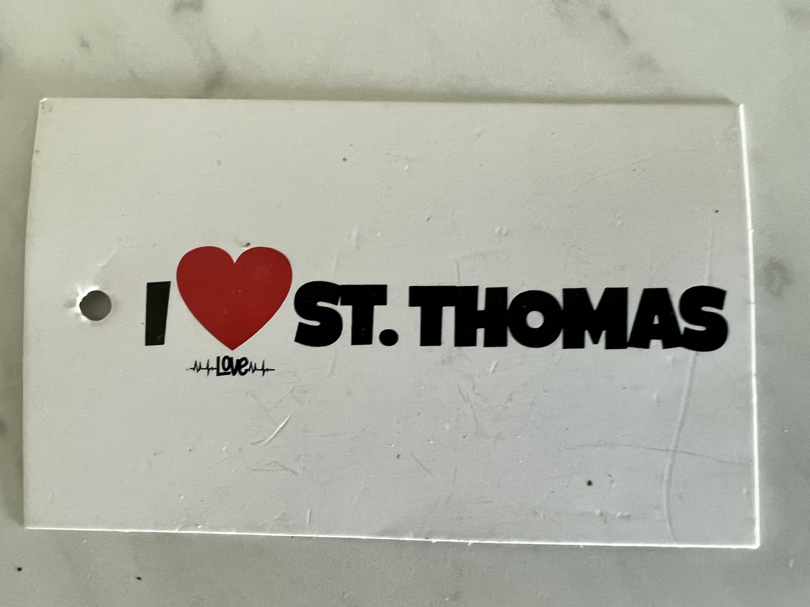
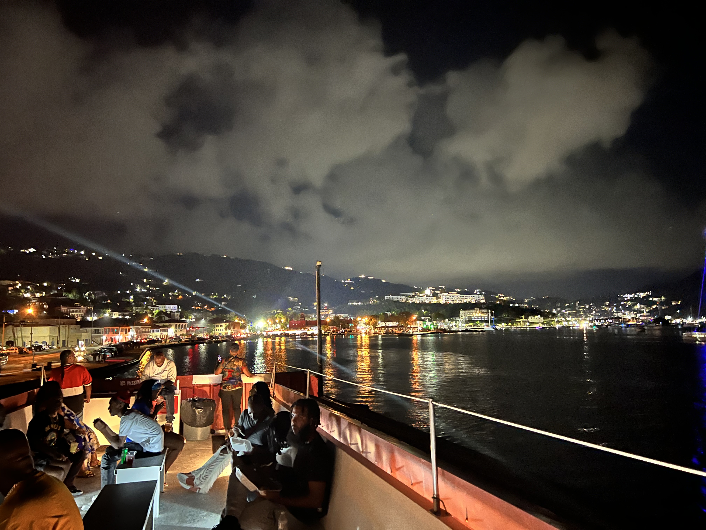
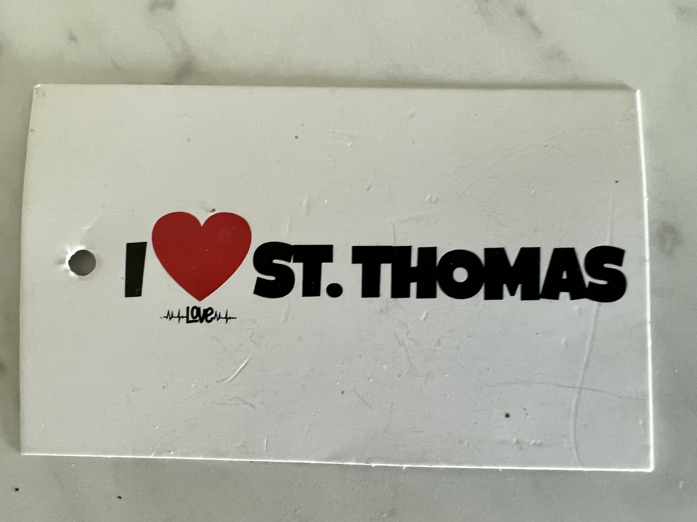
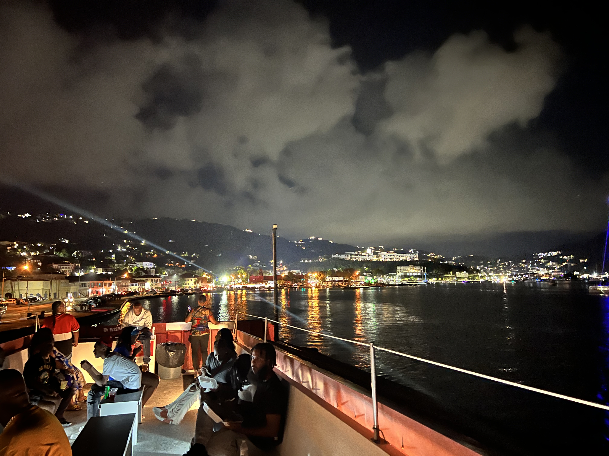

Thanks Launchode for making this possible
This is the beginning of a NEW CHAPTER in the life and times of Ms Johnson.
This is a "Calgon take me away moment!"
Being a coder will allow me to live abroad and still have a cemented career. I doubted myself several times on this journey, didn't know if I'd make it through it.
Glad to say, Im doing great and on the way to my dream life. "
 



If you could go anywhere in the world, where would you go? If you could do anything in the world, what would you do?
I would go to the Virgin Islands. I would go snorkeling and swimming in the ocean. I would take a boat ride to see the islands from the water. I would eat delicious food and meet friendly people. I would go back again and again.
The Virgin Islands is my favorite vacation place. The weather is always warm and the beaches are beautiful. The people are friendly and the food is delicious. I love to go snorkeling and swimming in the ocean. I also enjoy taking a boat ride to see the islands from the water. I can't wait to go back again!
This is the beginning of a NEW CHAPTER in the life and times of Ms Johnson.